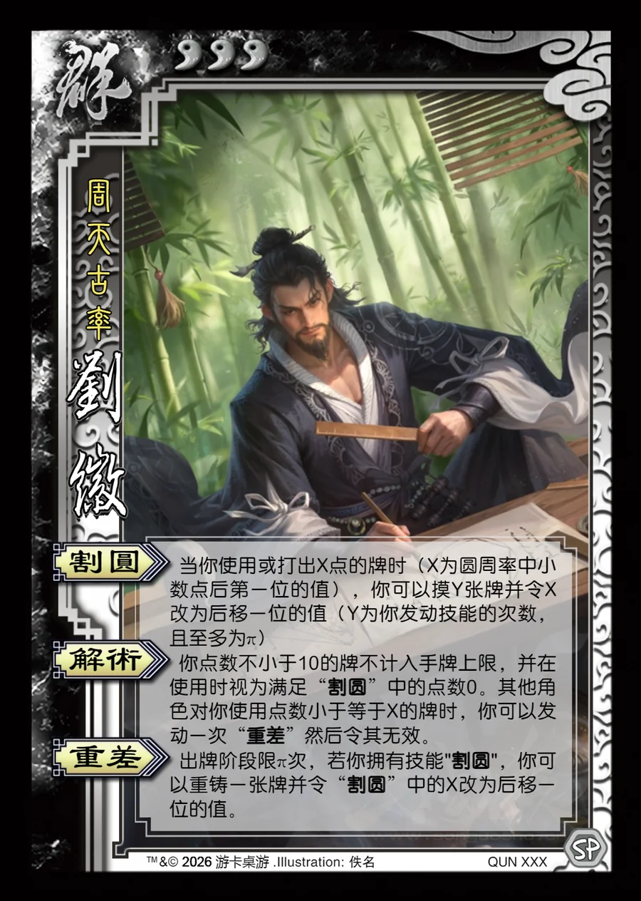

点击卡面查看大图
群
刘徽
♥3周天古率
割圆
当你使用或打出X点的牌时（X为圆周率中小数点后第一位的值），你可以摸Y张牌并令X改为后移一位的值（Y为你发动技能的次数，且至多为π）
解术
你点数不小于10的牌不计入手牌上限，并在使用时视为满足“割圆”中的点数0。其他角色对你使用点数小于等于X的牌时，你可以发动一次“重差”然后令其无效。
重差
出牌阶段限π次，若你拥有技能"割圆"，你可以重铸一张牌并令“割圆”中的X改为后移一位的值。